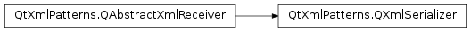

QXmlSerializer¶
Inherited by: QXmlFormatter
Synopsis¶
Functions¶
- def
codec() - def
outputDevice() - def
setCodec(codec)
Detailed Description¶
The
PySide2.QtXmlPatterns.QXmlSerializerclass is an implementation of QAbstractXmlReceiver for transforming XQuery output into unformatted XML.
PySide2.QtXmlPatterns.QXmlSerializertranslates anXQuery sequence, usually the output of anPySide2.QtXmlPatterns.QXmlQuery, into XML. Consider the example:QXmlQuery query; query.setQuery("doc('index.html')/html/body/p[1]"); QXmlSerializer serializer(query, myOutputDevice); query.evaluateTo(&serializer);First it constructs a
querythat gets the first paragraph from documentindex.html. Then it constructs an instance of this class with thequeryandmyOutputDevice. Finally, itevaluatesthequery, producing an ordered sequence of calls to the serializer’s callback functions. The sequence of callbacks transforms the query output to XML and writes it tomyOutputDevice.
PySide2.QtXmlPatterns.QXmlSerializerwill:
- Declare namespaces when needed,
- Use appropriate escaping, when characters can’t be represented in the XML,
- Handle line endings appropriately,
- Report errors, when it can’t serialize the content, e.g., when asked to serialize an attribute that is a top-level node, or when more than one top-level element is encountered.
If an error occurs during serialization, result is undefined unless the serializer is driven through a call to
QXmlQuery.evaluateTo().If the generated XML should be indented and formatted for reading, use
PySide2.QtXmlPatterns.QXmlFormatter.See also
-
class
PySide2.QtXmlPatterns.QXmlSerializer(query, outputDevice)¶ Parameters: - query –
PySide2.QtXmlPatterns.QXmlQuery - outputDevice –
PySide2.QtCore.QIODevice
Constructs a serializer that uses the name pool and message handler in
query, and writes the output tooutputDevice.outputDevicemust be a valid, non-null device that is open in write mode, otherwise behavior is undefined.outputDevicemust not be opened withQIODevice.Textbecause it will cause the output to be incorrect. This class will ensure line endings are serialized as according with the XML specification.PySide2.QtXmlPatterns.QXmlSerializerdoes not take ownership ofoutputDevice.- query –
-
PySide2.QtXmlPatterns.QXmlSerializer.State¶
-
PySide2.QtXmlPatterns.QXmlSerializer.codec()¶ Return type: PySide2.QtCore.QTextCodecReturns the codec being used by the serializer for encoding its XML output.
-
PySide2.QtXmlPatterns.QXmlSerializer.outputDevice()¶ Return type: PySide2.QtCore.QIODeviceReturns a pointer to the output device. There is no corresponding function to set the output device, because the output device must be passed to the constructor. The serializer does not take ownership of its IO device.
-
PySide2.QtXmlPatterns.QXmlSerializer.setCodec(codec)¶ Parameters: codec – PySide2.QtCore.QTextCodecSets the codec the serializer will use for encoding its XML output. The output codec is set to
outputCodec. By default, the output codec is set to the one forUTF-8. The serializer does not take ownership of the codec.
© 2018 The Qt Company Ltd. Documentation contributions included herein are the copyrights of their respective owners. The documentation provided herein is licensed under the terms of the GNU Free Documentation License version 1.3 as published by the Free Software Foundation. Qt and respective logos are trademarks of The Qt Company Ltd. in Finland and/or other countries worldwide. All other trademarks are property of their respective owners.